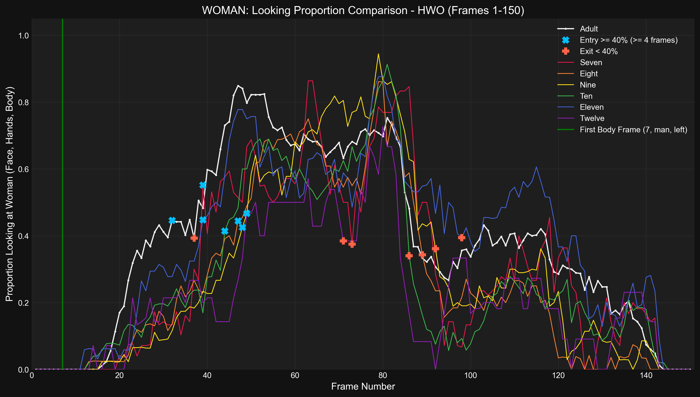
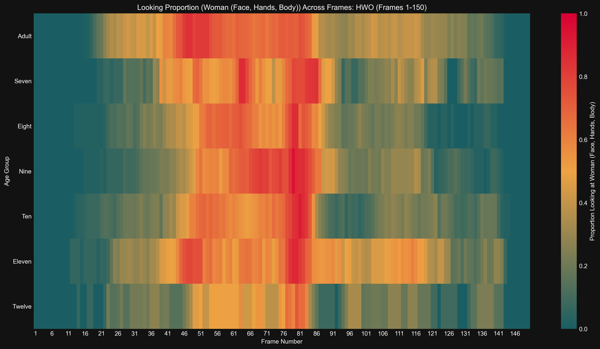

Generated: 2025-04-16 03:36:27
Time series of proportion looking at Woman (Face, Hands, Body) for Adult
Results (Adult):- Entry (≥40%, ≤F75): Frame 32- Exit (<40%): Frame 87- Duration (≥40%): 55 frames- Latency (from body frame): 25 frames
Time series of proportion looking at Woman (Face, Hands, Body) for Seven
Results (Seven):- Entry (≥40%, ≤F75): Frame 39- Exit (<40%): Frame 92- Duration (≥40%): 53 frames- Latency (from body frame): 32 frames
Time series of proportion looking at Woman (Face, Hands, Body) for Eight
Results (Eight):- Entry (≥40%, ≤F75): Frame 47- Exit (<40%): Frame 89- Duration (≥40%): 42 frames- Latency (from body frame): 40 frames
Time series of proportion looking at Woman (Face, Hands, Body) for Nine
Results (Nine):- Entry (≥40%, ≤F75): Frame 48- Exit (<40%): Frame 92- Duration (≥40%): 44 frames- Latency (from body frame): 41 frames
Time series of proportion looking at Woman (Face, Hands, Body) for Ten
Results (Ten):- Entry (≥40%, ≤F75): Frame 44- Exit (<40%): Frame 86- Duration (≥40%): 42 frames- Latency (from body frame): 37 frames
Time series of proportion looking at Woman (Face, Hands, Body) for Eleven
Results (Eleven):- Entry (≥40%, ≤F75): Frame 39- Exit (<40%): Frame 100- Duration (≥40%): 61 frames- Latency (from body frame): 32 frames
Time series of proportion looking at Woman (Face, Hands, Body) for Twelve
Results (Twelve):- Entry (≥40%, ≤F75): Frame 49- Exit (<40%): Frame 71- Duration (≥40%): 22 frames- Latency (from body frame): 42 frames
Detailed time series comparing proportion looking at Woman (Face, Hands, Body) across age groups.
Bar plot showing latency from body frame to >=40% entry (entry <= F75) looking at Woman (Face, Hands, Body) for hwo
Results (Latency in Frames, 0 if no valid entry ≤F75): seven: 32, eight: 40, nine: 41, ten: 37, eleven: 32, twelve: 42, adult: 25
Bar plot showing duration >= 40% (entry <= F75) looking at Woman (Face, Hands, Body) for hwo
Results (Duration in Frames, 0 if no valid entry ≤F75): seven: 53, eight: 42, nine: 44, ten: 42, eleven: 61, twelve: 22, adult: 55
Bar chart comparing mean proportion looking at Woman (Face, Hands, Body) across age groups.
Results (Mean Proportion): Seven: 0.301, Eight: 0.265, Nine: 0.289, Ten: 0.276, Eleven: 0.382, Twelve: 0.223, Adult: 0.383
Heatmap showing proportion looking at Woman (Face, Hands, Body) across frames and age groups.
